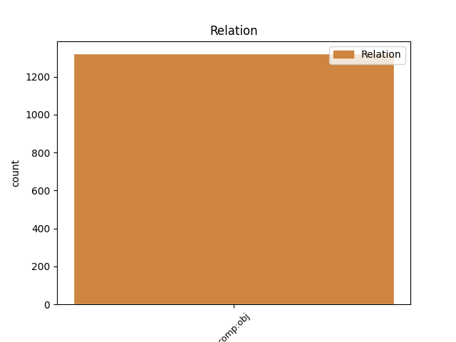

Distribution of features within this leaf

Agreement Rules sorted by frequency.
- When the dependent token is the direct object complements(comp:obj) of the head token, and the head token is ADP and the dependent token is NOUN.
1 Ginčai _ _ _ _ 0 _ _ _
2 dėl dėl ADP prl.K. AdpType=Prep|Case=Gen 0 _ _ _
3 šio _ _ _ _ 0 _ _ _
4 reglamento _ _ _ _ 0 _ _ _
5 taikymo taikymas NOUN dkt.vyr.vns.K. Case=Gen|Gender=Masc|Number=Sing 2 comp:obj _ _
6 nagrinėjami _ _ _ _ 0 _ _ _
7 įstatymų _ _ _ _ 0 _ _ _
8 nustatyta _ _ _ _ 0 _ _ _
9 tvarka _ _ _ _ 0 _ _ _
10 . _ _ _ _ 0 _ _ _
1 2006 _ _ _ _ 0 _ _ _
2 m _ _ _ _ 0 _ _ _
3 . _ _ _ _ 0 _ _ _
4 įregistruotas _ _ _ _ 0 _ _ _
5 241 _ _ _ _ 0 _ _ _
6 duomenų _ _ _ _ 0 _ _ _
7 valdytojas _ _ _ _ 0 _ _ _
8 ( _ _ _ _ 0 _ _ _
9 iš iš ADP prl.K. AdpType=Prep|Case=Gen 0 _ _ _
10 jų jis PRON įv.vyr.dgs.K. Case=Gen|Definite=Ind|Gender=Masc|Number=Plur|Person=3|PronType=Prs 9 comp:obj _ _
11 144 _ _ _ _ 0 _ _ _
12 viešieji _ _ _ _ 0 _ _ _
13 juridiniai _ _ _ _ 0 _ _ _
14 asmenys _ _ _ _ 0 _ _ _
15 , _ _ _ _ 0 _ _ _
16 80 _ _ _ _ 0 _ _ _
17 privačių _ _ _ _ 0 _ _ _
18 juridinių _ _ _ _ 0 _ _ _
19 asmenų _ _ _ _ 0 _ _ _
20 , _ _ _ _ 0 _ _ _
21 17 _ _ _ _ 0 _ _ _
22 fizinių _ _ _ _ 0 _ _ _
23 asmenų _ _ _ _ 0 _ _ _
24 ) _ _ _ _ 0 _ _ _
25 , _ _ _ _ 0 _ _ _
26 19 _ _ _ _ 0 _ _ _
27 proc _ _ _ _ 0 _ _ _
28 . _ _ _ _ 0 _ _ _
29 daugiau _ _ _ _ 0 _ _ _
30 nei _ _ _ _ 0 _ _ _
31 praėjusiais _ _ _ _ 0 _ _ _
32 metais _ _ _ _ 0 _ _ _
33 . _ _ _ _ 0 _ _ _
1 Inspekcija _ _ _ _ 0 _ _ _
2 yra _ _ _ _ 0 _ _ _
3 atsakinga _ _ _ _ 0 _ _ _
4 už _ _ _ _ 0 _ _ _
5 Lietuvos _ _ _ _ 0 _ _ _
6 informacinės _ _ _ _ 0 _ _ _
7 visuomenės _ _ _ _ 0 _ _ _
8 plėtros _ _ _ _ 0 _ _ _
9 programos _ _ _ _ 0 _ _ _
10 , _ _ _ _ 0 _ _ _
11 patvirtintos _ _ _ _ 0 _ _ _
12 Vyriausybės _ _ _ _ 0 _ _ _
13 2006 _ _ _ _ 0 _ _ _
14 m _ _ _ _ 0 _ _ _
15 . _ _ _ _ 0 _ _ _
16 birželio _ _ _ _ 0 _ _ _
17 21 _ _ _ _ 0 _ _ _
18 d _ _ _ _ 0 _ _ _
19 . _ _ _ _ 0 _ _ _
20 nutarimu _ _ _ _ 0 _ _ _
21 Nr _ _ _ _ 0 _ _ _
22 . _ _ _ _ 0 _ _ _
23 615 _ _ _ _ 0 _ _ _
24 ( _ _ _ _ 0 _ _ _
25 Žin _ _ _ _ 0 _ _ _
26 . _ _ _ _ 0 _ _ _
27 , _ _ _ _ 0 _ _ _
28 2006 _ _ _ _ 0 _ _ _
29 , _ _ _ _ 0 _ _ _
30 70 - 2630 _ _ _ _ 0 _ _ _
31 ) _ _ _ _ 0 _ _ _
32 , _ _ _ _ 0 _ _ _
33 priemones _ _ _ _ 0 _ _ _
34 : _ _ _ _ 0 _ _ _
35 „ _ _ _ _ 0 _ _ _
36 Skelbti _ _ _ _ 0 _ _ _
37 internetu _ _ _ _ 0 _ _ _
38 informaciją _ _ _ _ 0 _ _ _
39 apie _ _ _ _ 0 _ _ _
40 asmens _ _ _ _ 0 _ _ _
41 duomenų _ _ _ _ 0 _ _ _
42 ir _ _ _ _ 0 _ _ _
43 privatumo _ _ _ _ 0 _ _ _
44 apsaugą _ _ _ _ 0 _ _ _
45 “ _ _ _ _ 0 _ _ _
46 ( _ _ _ _ 0 _ _ _
47 10 . 6 _ _ _ _ 0 _ _ _
48 ) _ _ _ _ 0 _ _ _
49 ir _ _ _ _ 0 _ _ _
50 „ _ _ _ _ 0 _ _ _
51 Sukurti _ _ _ _ 0 _ _ _
52 ir _ _ _ _ 0 _ _ _
53 įdiegti _ _ _ _ 0 _ _ _
54 informacinę _ _ _ _ 0 _ _ _
55 sistemą _ _ _ _ 0 _ _ _
56 „ _ _ _ _ 0 _ _ _
57 Pagalba _ _ _ _ 0 _ _ _
58 “ _ _ _ _ 0 _ _ _
59 , _ _ _ _ 0 _ _ _
60 per per ADP prl.G. AdpType=Prep|Case=Acc 0 _ _ _
61 kurią kuris DET įv.mot.vns.G. Case=Acc|Definite=Ind|Gender=Fem|Number=Sing|PronType=Int 60 comp:obj _ _
62 iš _ _ _ _ 0 _ _ _
63 registruotų _ _ _ _ 0 _ _ _
64 duomenų _ _ _ _ 0 _ _ _
65 valdytojų _ _ _ _ 0 _ _ _
66 bus _ _ _ _ 0 _ _ _
67 renkami _ _ _ _ 0 _ _ _
68 duomenų _ _ _ _ 0 _ _ _
69 subjektų _ _ _ _ 0 _ _ _
70 asmens _ _ _ _ 0 _ _ _
71 duomenys _ _ _ _ 0 _ _ _
72 ar _ _ _ _ 0 _ _ _
73 informacija _ _ _ _ 0 _ _ _
74 apie _ _ _ _ 0 _ _ _
75 jų _ _ _ _ 0 _ _ _
76 asmens _ _ _ _ 0 _ _ _
77 duomenų _ _ _ _ 0 _ _ _
78 tvarkymą _ _ _ _ 0 _ _ _
79 “ _ _ _ _ 0 _ _ _
80 ( _ _ _ _ 0 _ _ _
81 10 . 7 _ _ _ _ 0 _ _ _
82 ) _ _ _ _ 0 _ _ _
83 . _ _ _ _ 0 _ _ _
1 „ _ _ _ _ 0 _ _ _
2 Po po ADP prl.K. AdpType=Prep|Case=Gen 0 _ _ _
3 Balkanų Balkanai PROPN dkt.tikr.vyr.dgs.K. Case=Gen|Gender=Masc|Number=Plur 2 comp:obj _ _
4 reikia _ _ _ _ 0 _ _ _
5 sustoti _ _ _ _ 0 _ _ _
6 ir _ _ _ _ 0 _ _ _
7 sutelkti _ _ _ _ 0 _ _ _
8 dėmesį _ _ _ _ 0 _ _ _
9 Europos _ _ _ _ 0 _ _ _
10 institutų _ _ _ _ 0 _ _ _
11 stiprinimui _ _ _ _ 0 _ _ _
12 “ _ _ _ _ 0 _ _ _
13 , _ _ _ _ 0 _ _ _
14 - _ _ _ _ 0 _ _ _
15 cituoja _ _ _ _ 0 _ _ _
16 trečiadienį _ _ _ _ 0 _ _ _
17 jo _ _ _ _ 0 _ _ _
18 žodžius _ _ _ _ 0 _ _ _
19 laikraštis _ _ _ _ 0 _ _ _
20 „ _ _ _ _ 0 _ _ _
21 La _ _ _ _ 0 _ _ _
22 Libre _ _ _ _ 0 _ _ _
23 Belgique _ _ _ _ 0 _ _ _
24 “ _ _ _ _ 0 _ _ _
25 . _ _ _ _ 0 _ _ _
1 Šio _ _ _ _ 0 _ _ _
2 tyrimo _ _ _ _ 0 _ _ _
3 objektas _ _ _ _ 0 _ _ _
4 yra _ _ _ _ 0 _ _ _
5 privačios _ _ _ _ 0 _ _ _
6 sveikatos _ _ _ _ 0 _ _ _
7 draudimo _ _ _ _ 0 _ _ _
8 bendrovės _ _ _ _ 0 _ _ _
9 , _ _ _ _ 0 _ _ _
10 teikiančios _ _ _ _ 0 _ _ _
11 privataus _ _ _ _ 0 _ _ _
12 medicininio _ _ _ _ 0 _ _ _
13 gydymo _ _ _ _ 0 _ _ _
14 draudimo _ _ _ _ 0 _ _ _
15 paslaugas _ _ _ _ 0 _ _ _
16 , _ _ _ _ 0 _ _ _
17 o _ _ _ _ 0 _ _ _
18 tikslas _ _ _ _ 0 _ _ _
19 – _ _ _ _ 0 _ _ _
20 išanalizuoti _ _ _ _ 0 _ _ _
21 , _ _ _ _ 0 _ _ _
22 ar _ _ _ _ 0 _ _ _
23 duomenų _ _ _ _ 0 _ _ _
24 apsaugos _ _ _ _ 0 _ _ _
25 taisyklės _ _ _ _ 0 _ _ _
26 šiame _ _ _ _ 0 _ _ _
27 sektoriuje _ _ _ _ 0 _ _ _
28 derinamos _ _ _ _ 0 _ _ _
29 su su ADP prl.Įn. AdpType=Prep|Case=Ins 0 _ _ _
30 esančiomis būti VERB vksm.dlv.veik.es.mot.dgs.Įn. Case=Ins|Definite=Ind|Gender=Fem|Number=Plur|Polarity=Pos|Tense=Pres|VerbForm=Part|Voice=Act 29 comp:obj _ _
31 visoje _ _ _ _ 0 _ _ _
32 Europos _ _ _ _ 0 _ _ _
33 Sąjungoje _ _ _ _ 0 _ _ _
34 ir _ _ _ _ 0 _ _ _
35 kaip _ _ _ _ 0 _ _ _
36 tai _ _ _ _ 0 _ _ _
37 atliekama _ _ _ _ 0 _ _ _
38 . _ _ _ _ 0 _ _ _
1 Jis _ _ _ _ 0 _ _ _
2 jau _ _ _ _ 0 _ _ _
3 senas _ _ _ _ 0 _ _ _
4 , _ _ _ _ 0 _ _ _
5 spėjo _ _ _ _ 0 _ _ _
6 susidėvėti _ _ _ _ 0 _ _ _
7 per per ADP prl.G. AdpType=Prep|Case=Acc 0 _ _ _
8 trejetą trejetas NUM sktv.raid.kuopin.G. Case=Acc|Definite=Ind|NumForm=Word|NumType=Sets 7 comp:obj _ _
9 metų _ _ _ _ 0 _ _ _
10 , _ _ _ _ 0 _ _ _
11 trejetą _ _ _ _ 0 _ _ _
12 metų _ _ _ _ 0 _ _ _
13 jis _ _ _ _ 0 _ _ _
14 buvo _ _ _ _ 0 _ _ _
15 susijęs _ _ _ _ 0 _ _ _
16 su _ _ _ _ 0 _ _ _
17 mano _ _ _ _ 0 _ _ _
18 žvilgsniu _ _ _ _ 0 _ _ _
19 , _ _ _ _ 0 _ _ _
20 nubusdamas _ _ _ _ 0 _ _ _
21 ir _ _ _ _ 0 _ _ _
22 užmigdamas _ _ _ _ 0 _ _ _
23 matydavau _ _ _ _ 0 _ _ _
24 jo _ _ _ _ 0 _ _ _
25 apskritą _ _ _ _ 0 _ _ _
26 ciferblatą _ _ _ _ 0 _ _ _
27 ir _ _ _ _ 0 _ _ _
28 pagal _ _ _ _ 0 _ _ _
29 jį _ _ _ _ 0 _ _ _
30 suprasdavau _ _ _ _ 0 _ _ _
31 , _ _ _ _ 0 _ _ _
32 kad _ _ _ _ 0 _ _ _
33 mano _ _ _ _ 0 _ _ _
34 laikas _ _ _ _ 0 _ _ _
35 šiame _ _ _ _ 0 _ _ _
36 pasaulyje _ _ _ _ 0 _ _ _
37 juda _ _ _ _ 0 _ _ _
38 pirmyn _ _ _ _ 0 _ _ _
39 , _ _ _ _ 0 _ _ _
40 nors _ _ _ _ 0 _ _ _
41 laikrodyje _ _ _ _ 0 _ _ _
42 jis _ _ _ _ 0 _ _ _
43 kažkodėl _ _ _ _ 0 _ _ _
44 sukasi _ _ _ _ 0 _ _ _
45 ratu _ _ _ _ 0 _ _ _
46 . _ _ _ _ 0 _ _ _
Disagree Examples:
1 Ir _ _ _ _ 0 _ _ _
2 bandymas _ _ _ _ 0 _ _ _
3 pradėti _ _ _ _ 0 _ _ _
4 represijas _ _ _ _ 0 _ _ _
5 prieš prieš ADP prl.G. AdpType=Prep|Case=Acc 0 _ _ _
6 1988 _ _ _ _ 0 _ _ _
7 vasario vasaris NOUN dkt.vyr.vns.K. Case=Gen|Gender=Masc|Number=Sing 5 comp:obj _ _
8 LKP _ _ _ _ 0 _ _ _
9 CK _ _ _ _ 0 _ _ _
10 plenume _ _ _ _ 0 _ _ _
11 , _ _ _ _ 0 _ _ _
12 atsisakymas _ _ _ _ 0 _ _ _
13 keisti _ _ _ _ 0 _ _ _
14 Konstitucijos _ _ _ _ 0 _ _ _
15 6 _ _ _ _ 0 _ _ _
16 straipsnį _ _ _ _ 0 _ _ _
17 ir _ _ _ _ 0 _ _ _
18 neslepiamas _ _ _ _ 0 _ _ _
19 kolaboravimas _ _ _ _ 0 _ _ _
20 su _ _ _ _ 0 _ _ _
21 Maskva _ _ _ _ 0 _ _ _
22 - _ _ _ _ 0 _ _ _
23 viskas _ _ _ _ 0 _ _ _
24 pasirodo _ _ _ _ 0 _ _ _
25 buvus _ _ _ _ 0 _ _ _
26 išmintingos _ _ _ _ 0 _ _ _
27 komunistų _ _ _ _ 0 _ _ _
28 vadovybės _ _ _ _ 0 _ _ _
29 politika _ _ _ _ 0 _ _ _
30 , _ _ _ _ 0 _ _ _
31 kuriai _ _ _ _ 0 _ _ _
32 priešinama _ _ _ _ 0 _ _ _
33 amžinai _ _ _ _ 0 _ _ _
34 klystančio _ _ _ _ 0 _ _ _
35 , _ _ _ _ 0 _ _ _
36 ne _ _ _ _ 0 _ _ _
37 laiku _ _ _ _ 0 _ _ _
38 ir _ _ _ _ 0 _ _ _
39 ne _ _ _ _ 0 _ _ _
40 vietoje _ _ _ _ 0 _ _ _
41 veikiančio _ _ _ _ 0 _ _ _
42 Sąjūdžio _ _ _ _ 0 _ _ _
43 politika _ _ _ _ 0 _ _ _
44 . _ _ _ _ 0 _ _ _
1 Pirmame _ _ _ _ 0 _ _ _
2 skyriuje _ _ _ _ 0 _ _ _
3 , _ _ _ _ 0 _ _ _
4 remiantis _ _ _ _ 0 _ _ _
5 67 _ _ _ _ 0 _ _ _
6 ekspertų _ _ _ _ 0 _ _ _
7 apklausa _ _ _ _ 0 _ _ _
8 , _ _ _ _ 0 _ _ _
9 ištiriamos _ _ _ _ 0 _ _ _
10 globalizacijos _ _ _ _ 0 _ _ _
11 ( _ _ _ _ 0 _ _ _
12 pasireiškiančios _ _ _ _ 0 _ _ _
13 per per ADP prl.G. AdpType=Prep|Case=Acc 0 _ _ _
14 Pasaulio _ _ _ _ 0 _ _ _
15 banko bankas NOUN dkt.vyr.vns.K. Case=Gen|Gender=Masc|Number=Sing 13 comp:obj _ SpaceAfter=No
16 , _ _ _ _ 0 _ _ _
17 Tarptautinio _ _ _ _ 0 _ _ _
18 valiutos _ _ _ _ 0 _ _ _
19 fondo _ _ _ _ 0 _ _ _
20 ) _ _ _ _ 0 _ _ _
21 ir _ _ _ _ 0 _ _ _
22 europeizacijos _ _ _ _ 0 _ _ _
23 ( _ _ _ _ 0 _ _ _
24 pasireiškiančios _ _ _ _ 0 _ _ _
25 per _ _ _ _ 0 _ _ _
26 bendrą _ _ _ _ 0 _ _ _
27 eurointegracijos _ _ _ _ 0 _ _ _
28 , _ _ _ _ 0 _ _ _
29 Europos _ _ _ _ 0 _ _ _
30 socialinio _ _ _ _ 0 _ _ _
31 gerovės _ _ _ _ 0 _ _ _
32 modelio _ _ _ _ 0 _ _ _
33 propagavimą _ _ _ _ 0 _ _ _
34 , _ _ _ _ 0 _ _ _
35 Europos _ _ _ _ 0 _ _ _
36 struktūrinių _ _ _ _ 0 _ _ _
37 fondų _ _ _ _ 0 _ _ _
38 ) _ _ _ _ 0 _ _ _
39 poveikį _ _ _ _ 0 _ _ _
40 gerovės _ _ _ _ 0 _ _ _
41 valstybės _ _ _ _ 0 _ _ _
42 raidai _ _ _ _ 0 _ _ _
43 Lietuvoje _ _ _ _ 0 _ _ _
44 . _ _ _ _ 0 _ _ _
1 Platus _ _ _ _ 0 _ _ _
2 teorinės _ _ _ _ 0 _ _ _
3 literatūros _ _ _ _ 0 _ _ _
4 šaltinių _ _ _ _ 0 _ _ _
5 sąrašas _ _ _ _ 0 _ _ _
6 , _ _ _ _ 0 _ _ _
7 apimantis _ _ _ _ 0 _ _ _
8 išsamią _ _ _ _ 0 _ _ _
9 šeimos _ _ _ _ 0 _ _ _
10 žemėlapio _ _ _ _ 0 _ _ _
11 metodo _ _ _ _ 0 _ _ _
12 kūrėjos _ _ _ _ 0 _ _ _
13 Irene'os _ _ _ _ 0 _ _ _
14 Levin _ _ _ _ 0 _ _ _
15 ir _ _ _ _ 0 _ _ _
16 vieno _ _ _ _ 0 _ _ _
17 iš _ _ _ _ 0 _ _ _
18 iškiliausių _ _ _ _ 0 _ _ _
19 šiuolaikinių _ _ _ _ 0 _ _ _
20 šeimos _ _ _ _ 0 _ _ _
21 sociologų _ _ _ _ 0 _ _ _
22 , _ _ _ _ 0 _ _ _
23 diadinės _ _ _ _ 0 _ _ _
24 šeimos _ _ _ _ 0 _ _ _
25 tyrimų _ _ _ _ 0 _ _ _
26 perspektyvos _ _ _ _ 0 _ _ _
27 autoriaus _ _ _ _ 0 _ _ _
28 Jan _ _ _ _ 0 _ _ _
29 Trost _ _ _ _ 0 _ _ _
30 bibliografiją _ _ _ _ 0 _ _ _
31 , _ _ _ _ 0 _ _ _
32 taip _ _ _ _ 0 _ _ _
33 pat _ _ _ _ 0 _ _ _
34 apie apie ADP prl.G. AdpType=Prep|Case=Acc 0 _ _ _
35 šimtą _ _ _ _ 0 _ _ _
36 Vakarų _ _ _ _ 0 _ _ _
37 sociologų _ _ _ _ 0 _ _ _
38 darbų darbas NOUN dkt.vyr.dgs.K. Case=Gen|Gender=Masc|Number=Plur 34 comp:obj _ _
39 yra _ _ _ _ 0 _ _ _
40 ne _ _ _ _ 0 _ _ _
41 tik _ _ _ _ 0 _ _ _
42 jau _ _ _ _ 0 _ _ _
43 pats _ _ _ _ 0 _ _ _
44 savaime _ _ _ _ 0 _ _ _
45 labai _ _ _ _ 0 _ _ _
46 vertingas _ _ _ _ 0 _ _ _
47 visiems _ _ _ _ 0 _ _ _
48 besidomintiems _ _ _ _ 0 _ _ _
49 šeimos _ _ _ _ 0 _ _ _
50 sociologijos _ _ _ _ 0 _ _ _
51 problematika _ _ _ _ 0 _ _ _
52 ; _ _ _ _ 0 _ _ _
53 tai _ _ _ _ 0 _ _ _
54 liudija _ _ _ _ 0 _ _ _
55 apie _ _ _ _ 0 _ _ _
56 didžiulį _ _ _ _ 0 _ _ _
57 ir _ _ _ _ 0 _ _ _
58 kruopštų _ _ _ _ 0 _ _ _
59 knygos _ _ _ _ 0 _ _ _
60 autorių _ _ _ _ 0 _ _ _
61 darbą _ _ _ _ 0 _ _ _
62 , _ _ _ _ 0 _ _ _
63 atliktą _ _ _ _ 0 _ _ _
64 apibendrinant _ _ _ _ 0 _ _ _
65 sukauptą _ _ _ _ 0 _ _ _
66 patirtį _ _ _ _ 0 _ _ _
67 bei _ _ _ _ 0 _ _ _
68 jų _ _ _ _ 0 _ _ _
69 itin _ _ _ _ 0 _ _ _
70 atsakingą _ _ _ _ 0 _ _ _
71 požiūrį _ _ _ _ 0 _ _ _
72 į _ _ _ _ 0 _ _ _
73 savo _ _ _ _ 0 _ _ _
74 misiją _ _ _ _ 0 _ _ _
75 . _ _ _ _ 0 _ _ _
1 Tas _ _ _ _ 0 _ _ _
2 , _ _ _ _ 0 _ _ _
3 kuris _ _ _ _ 0 _ _ _
4 įgyvendins _ _ _ _ 0 _ _ _
5 visas _ _ _ _ 0 _ _ _
6 gerovės _ _ _ _ 0 _ _ _
7 ir _ _ _ _ 0 _ _ _
8 turėjimo _ _ _ _ 0 _ _ _
9 svajas _ _ _ _ 0 _ _ _
10 , _ _ _ _ 0 _ _ _
11 kokias _ _ _ _ 0 _ _ _
12 tik _ _ _ _ 0 _ _ _
13 ištisos _ _ _ _ 0 _ _ _
14 trys _ _ _ _ 0 _ _ _
15 lietuvių _ _ _ _ 0 _ _ _
16 kartos _ _ _ _ 0 _ _ _
17 prisvajojo _ _ _ _ 0 _ _ _
18 per per ADP prl.G. AdpType=Prep|Case=Acc 0 _ _ _
19 penkiasdešimt _ _ _ _ 0 _ _ _
20 tarybmečio _ _ _ _ 0 _ _ _
21 metų metai NOUN dkt.vyr.dgs.K. Case=Gen|Gender=Masc|Number=Plur 18 comp:obj _ SpaceAfter=No
22 . _ _ _ _ 0 _ _ _
1 Mano _ _ _ _ 0 _ _ _
2 temperamentas temperamentas NOUN dkt.vyr.vns.V. Case=Nom|Gender=Masc|Number=Sing 4 comp:obj _ _
3 ne _ _ _ _ 0 _ _ _
4 iš iš ADP prl.K. AdpType=Prep|Case=Gen 0 _ _ _
5 lėtųjų _ _ _ _ 0 _ _ _
6 , _ _ _ _ 0 _ _ _
7 o _ _ _ _ 0 _ _ _
8 verslas _ _ _ _ 0 _ _ _
9 choleriško _ _ _ _ 0 _ _ _
10 būdo _ _ _ _ 0 _ _ _
11 reikalauja _ _ _ _ 0 _ _ _
12 ir _ _ _ _ 0 _ _ _
13 jį _ _ _ _ 0 _ _ _
14 dar _ _ _ _ 0 _ _ _
15 sustiprina _ _ _ _ 0 _ _ _
16 , _ _ _ _ 0 _ _ _
17 lietuviškas _ _ _ _ 0 _ _ _
18 kapitalizmas _ _ _ _ 0 _ _ _
19 tai _ _ _ _ 0 _ _ _
20 tikrai _ _ _ _ 0 _ _ _
21 . _ _ _ _ 0 _ _ _